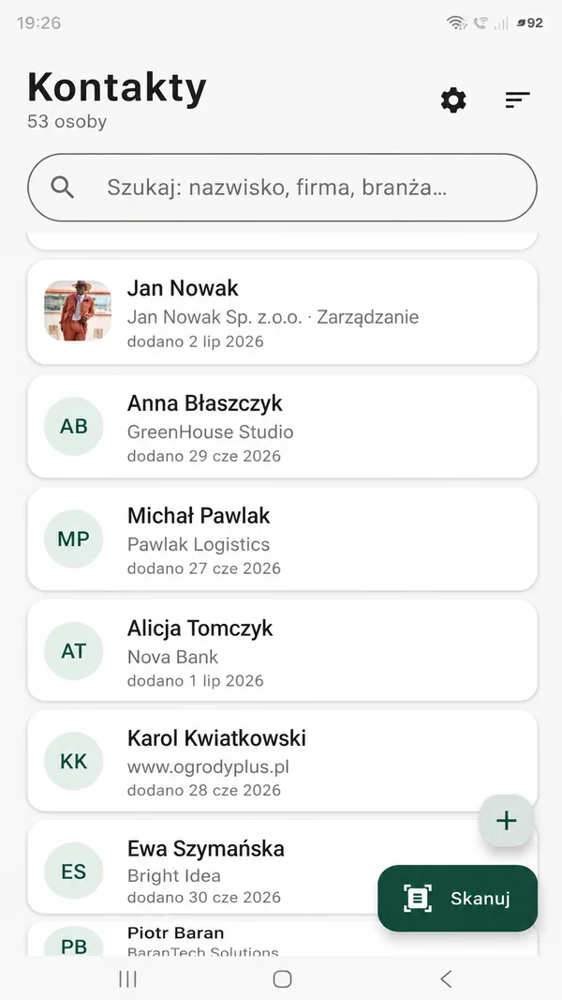
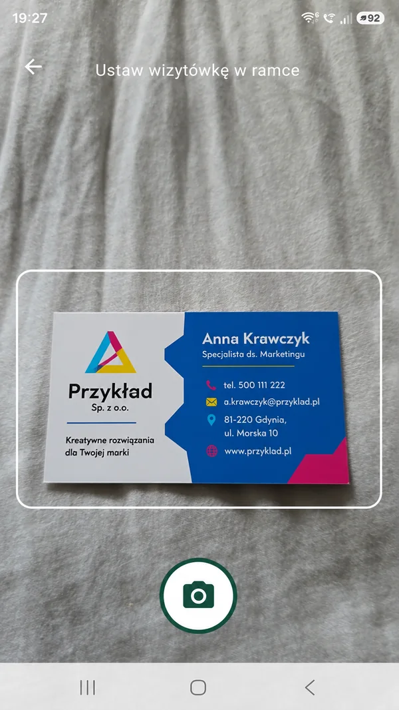
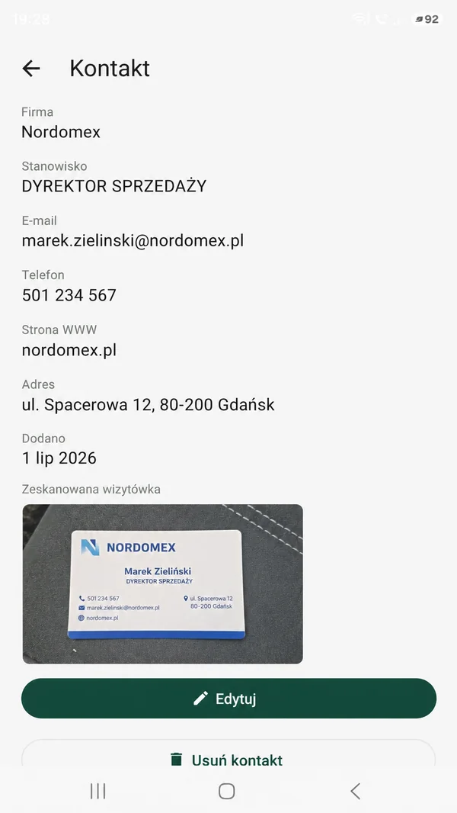
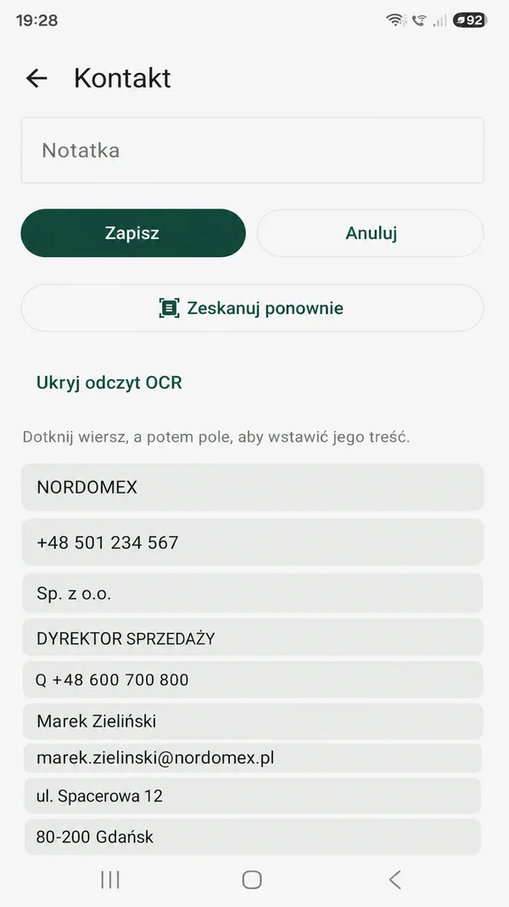
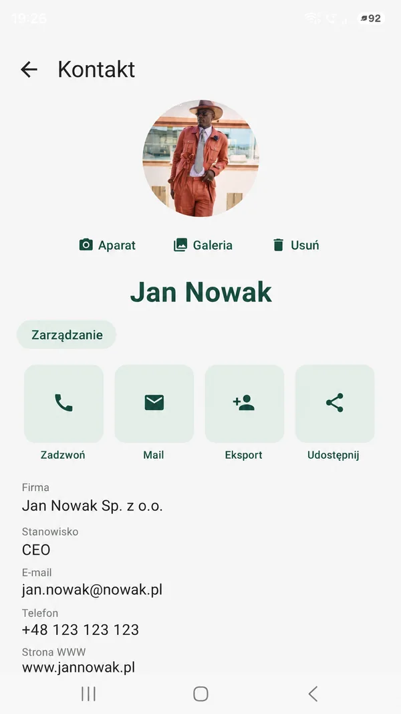

Robisz zdjęcie wizytówki, Wizytownik odczytuje imię, firmę, telefon i e-mail, a Ty tylko sprawdzasz i zapisujesz. Cały odczyt dzieje się na Twoim telefonie, więc cudze dane z wizytówek nigdzie nie wyjeżdżają.



Wizytownik to płatna aplikacja na Androida do skanowania wizytówek i prowadzenia bazy kontaktów. Działa w pełni offline: nie ma uprawnienia do internetu, tekst z wizytówki rozpoznaje lokalnie na telefonie, a kontakty przechowuje w pamięci urządzenia. Kosztuje 24,99 zł jednorazowo w Google Play, bez abonamentu, reklam i zakładania konta. Działa po polsku i po angielsku. Twórcą aplikacji jest Bartosz Borowski z Gdańska.
Bez przepisywania, bez wysyłania zdjęć na serwer i bez czekania na odpowiedź z chmury.
Ustawiasz wizytówkę w ramce i robisz zdjęcie. Tekst odczytuje model działający na Twoim telefonie, bez wysyłania zdjęcia na serwer.

Aplikacja rozkłada tekst na pola: imię, nazwisko, firmę, stanowisko, telefon, e-mail, stronę i adres. Jeśli coś trafiło nie tam, dotykasz wiersz odczytu, potem pole, i treść jest na miejscu, zanim cokolwiek się zapisze.

Kontakt trafia do przeszukiwalnej bazy z branżą i zdjęciem wizytówki. Dzwonisz, piszesz albo dodajesz go do książki telefonu jednym dotknięciem.
Ktoś podał Ci wizytówkę przy kawie i zaufał, że jego telefon i e-mail trafią do Ciebie. Większość popularnych skanerów wizytówek to usługi chmurowe: zdjęcie leci na serwer, tam jest odczytywane i tam zostaje.
Wizytownik działa inaczej. Aplikacja nie ma uprawnienia INTERNET, więc system Android po prostu nie pozwala jej niczego wysłać. Tekst rozpoznaje model działający na Twoim telefonie, a baza kontaktów leży w jego pamięci.
Dla prawnika, doradcy, księgowego czy rekrutera to konkretny argument: nie musisz nikomu tłumaczyć, gdzie trafiły dane z wizytówek, które zebrałeś.
| Wizytownik | Typowy skaner chmurowy | |
|---|---|---|
| Dostęp do internetu | Brak uprawnienia | Wymagany |
| Gdzie odczytywany jest tekst | Na telefonie | Na serwerze dostawcy |
| Gdzie leżą kontakty | W pamięci telefonu | W chmurze dostawcy |
| Konto użytkownika | Niepotrzebne | Zwykle wymagane |
| Działa bez zasięgu | Zawsze | Często ograniczony |
| Model płatności | 24,99 zł jednorazowo | Często abonament lub reklamy |
Porównanie ogólne. Szczegóły innych aplikacji sprawdzisz w ich politykach prywatności.
Imię, firma, telefon, e-mail, adres, branża. Wpisujesz fragment i masz.
Grupujesz kontakty według branży i szybko znajdujesz specjalistę, którego szukasz.
Zeskanujesz tę samą wizytówkę drugi raz? Aplikacja to zauważy przed zapisem.
Prefiks kraju z wizytówki zostaje zapisany prawidłowo: +48, +49, +44 i inne.
Cała baza do pliku CSV albo vCard. Twoje dane nie są zamknięte w aplikacji.
Przekazujesz kontakt dalej jako vCard albo zwykły tekst, przez dowolny komunikator.
Dodajesz twarz do kontaktu, żeby po pół roku wiedzieć, z kim rozmawiałeś.
Interfejs w dwóch językach, przełączany w ustawieniach.
BNI, izby gospodarcze, konferencje i targi. Wracasz z garścią wizytówek i chcesz je mieć w telefonie, zanim wylądują w szufladzie.
Prawnicy, doradcy, księgowi, HR, medycyna. Tam, gdzie poufność to obowiązek, a pytanie „gdzie trafiły te dane?” musi mieć prostą odpowiedź.
Spotkania u klienta, budowy, magazyny i miejsca bez zasięgu. Skanowanie działa wszędzie tak samo.
Tak, zawsze. Aplikacja nie ma uprawnienia do internetu, więc skanowanie, rozpoznawanie tekstu, wyszukiwanie i eksport działają tak samo w samolocie, w piwnicy i na konferencji bez zasięgu.
Wizytownik niczego nie wysyła. Zdjęcia, odczytany tekst i kontakty zapisują się tylko w pamięci telefonu. Jeśli masz włączoną systemową kopię zapasową Androida, telefon może uwzględnić dane aplikacji w swojej kopii na koncie Google, tak jak dane innych aplikacji. Możesz to wyłączyć w ustawieniach telefonu.
W ustawieniach jest eksport całej bazy do pliku CSV, który otworzysz w Excelu i zaimportujesz do większości systemów CRM, oraz do pliku vCard. Pojedynczy kontakt dodasz też jednym dotknięciem do książki telefonu.
Tak, aplikacja rozpoznaje polskie znaki i polskie formaty numerów telefonu, a numery zagraniczne zapisuje z właściwym prefiksem kraju. Przed zapisem zawsze widzisz rozpoznane pola i możesz je poprawić.
24,99 zł jednorazowo w Google Play. Bez abonamentu, bez reklam i bez zakładania konta.
Na razie aplikacja jest dostępna tylko na Androida, w sklepie Google Play.
Wizytownik nie przekazuje danych z wizytówek żadnemu serwerowi ani firmie, więc nie pojawia się zewnętrzny podmiot przetwarzający ani transfer danych poza Europejski Obszar Gospodarczy. Dane osób z wizytówek zostają pod Twoją kontrolą, tak jak w papierowym wizytowniku.
Kilkanaście sekund na wizytówkę, a dane zostają tam, gdzie powinny: u Ciebie.